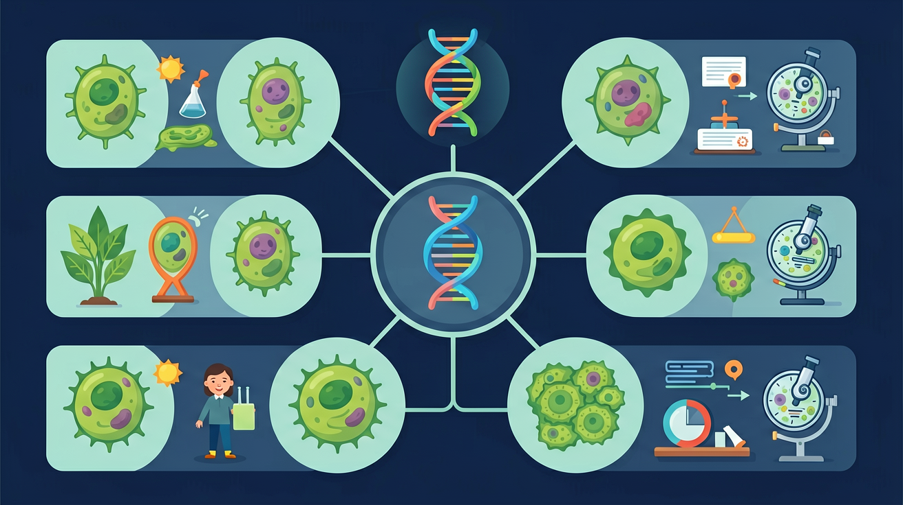
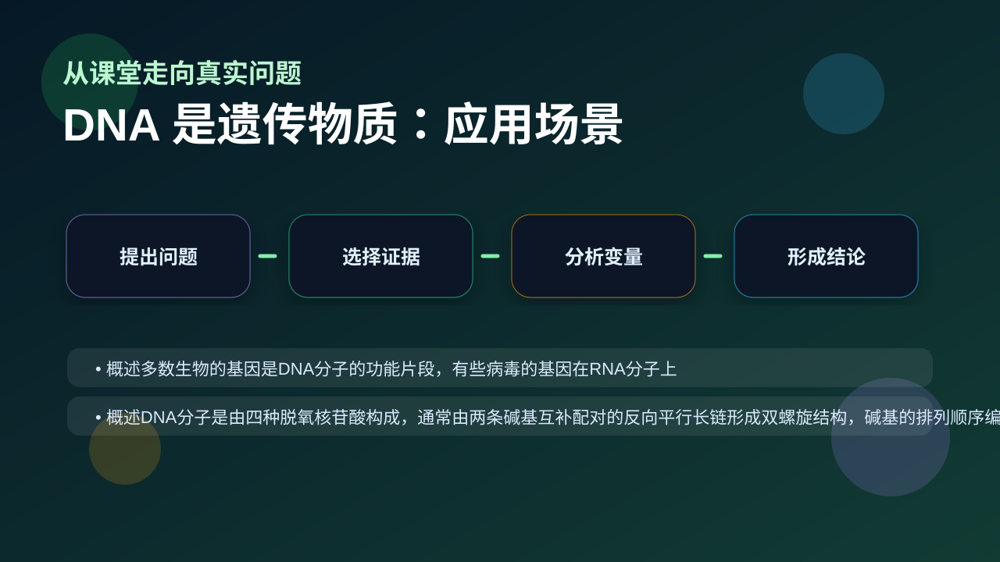

Gallery v1.0.0 · skill v7.14
遗传信息怎样被保存、表达、传递，又怎样影响性状？

已经知道：此前已学习细胞核含有染色体，染色体由DNA和蛋白质组成（七下《生物体的结构层次》），并知道性状通过生殖细胞遗传给后代（八下《生物的遗传与变异》）
但问题是：实验中蛋白质和DNA常同时存在时，学生易混淆遗传物质的判断标准（如认为噬菌体外壳蛋白参与遗传），且难以理解死的S型菌DNA如何使R型菌转化并遗传给后代
所以学：当法医通过现场残留的DNA锁定嫌疑人时，需要确凿证明遗传物质是DNA而非其他成分。本课将揭示经典实验如何排除蛋白质干扰，确立DNA作为遗传物质的专属证据链
先选一个卡点。后面的例子、互动和 AI 学伴都会围绕它给你最小提示。
选择或输入后，本课会围绕你的问题展开。
以下哪项是艾弗里实验的关键发现？
现象入口：肺炎链球菌转化实验和噬菌体侵染实验都指向同一个结论：进入并发挥作用的是DNA。
机制解释：DNA能储存、复制并传递遗传信息，因此是多数生物的遗传物质。
证据抓手：证据来自转化因子实验、同位素标记蛋白质和DNA的噬菌体实验。
变量线索：处理酶种类、标记元素、进入细胞的物质和后代表现。做题时先找变量，再判断机制，最后写证据。
观察噬菌体侵染实验中³²P标记的DNA进入细菌，³⁵S标记的蛋白质留在外部
分析肺炎双球菌转化实验中R型菌如何被S型菌DNA转化为致病菌
阐明DNA作为遗传物质需具备稳定、可复制、指导蛋白质合成的特性
举例说明烟草花叶病毒等RNA病毒遗传物质不同于绝大多数生物
情境：噬菌体实验中标记DNA的磷元素进入细菌，而标记蛋白质的硫元素主要留在外部。
作答路径：现象：³²P标记组沉淀物有放射性而³⁵S组主要在上清液→机制：DNA进入细菌并指导子代合成→证据：子代噬菌体检测到³²P标记的DNA但无³⁵S标记的蛋白质，直接证明遗传功能由DNA承担
评分提醒：典型失分：混淆转化实验与侵染实验结论，未区分DNA酶处理组结果，忽视少数病毒以RNA为遗传物质的特例
先用 PhET 观察转录和翻译如何把遗传信息转成蛋白质，再回到本课的 Canvas 任务，把“信息流”与 DNA 是遗传物质 联系起来。
💡 操作提示：拖动调控元件，观察 mRNA 和蛋白质产量变化，思考“表达量变化”和“性状变化”之间的证据链。
³²P 标记 DNA：放射性主要在沉淀（细菌）中；³⁵S 标记蛋白质：放射性主要在上清中。真实实验数据说明进入细菌的是 DNA。
💡 探究任务：切换标记元素，对比两组放射性分布，解释为什么该实验能证明 DNA 是遗传物质而蛋白质不是。
只背实验名称，不说明“哪种物质进入细胞并影响后代”，就不能证明结论。
只说“增加/减少”不够，要写清改变的是 处理酶种类、标记元素、进入细胞的物质和后代表现 中的哪一个。
没有实验现象、曲线趋势或结构证据，答案就像猜测。
关于遗传物质的叙述正确的是？
视频用语音和动态画面回顾本课主线：问题情境 → 机制模型 → 证据判断 → 迁移应用。

评价一个分子是不是遗传物质，要看能否复制、表达并传递信息。
提交后会检查你的解释是否包含现象、机制和变量。
如果学生只说出概念名称，继续追问：题干里哪个证据最关键？这个证据对应分子、细胞、个体还是生态系统层级？如果改变 处理酶种类、标记元素、进入细胞的物质和后代表现 中的一个条件，结果会怎样？这三问能把答案从背诵推进到科学解释。
列举遗传物质必备的四个条件
分析若噬菌体用³⁵S标记外壳但离心后沉淀物有放射性，可能原因是什么
设计实验验证烟草花叶病毒的遗传物质是RNA而非蛋白质
艾弗里实验中，用DNA酶处理S型菌提取物后导致什么结果？
学习小结：通过肺炎双球菌转化实验的酶解对照与噬菌体同位素标记实验，证明DNA具备遗传物质的四个特征，病毒中RNA是特例
先独立作答，再点选项查看对错与错因。
格里菲斯肺炎链球菌实验中，能使R型菌转化为S型菌的物质是
赫尔希-蔡斯实验中，标记噬菌体蛋白质外壳的元素是
若用DNA酶处理S型菌提取物，再与R型菌混合培养，实验结果应是
艾弗里实验通过____酶处理证明DNA是转化因子
答案：DNA
酶解对照实验的关键步骤
噬菌体侵染实验中，进入细菌内部的是____分子
答案：DNA
放射性标记追踪结果
关于遗传物质的叙述正确的是
设计实验验证DNA是转化因子
❓ 为什么DNA能决定我长得像爸妈？
❓ 病毒也有DNA吗？它算不算遗传物质？
❓ 课本说蛋白质不是遗传物质，那为啥朊病毒还能遗传病？
学完这一课，这些问题你都能自信地回答。
✅ RNA病毒以RNA为遗传物质
💡 混淆DNA病毒的普遍性与RNA病毒存在
✅ 蛋白质不复制，DNA半保留复制传递遗传信息
💡 将性状表达与遗传物质混淆
口诀：遗传物质DNA，蛋白干活它传家
类比：DNA像设计图纸（遗传），蛋白质像施工队（功能）